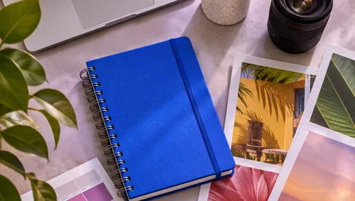
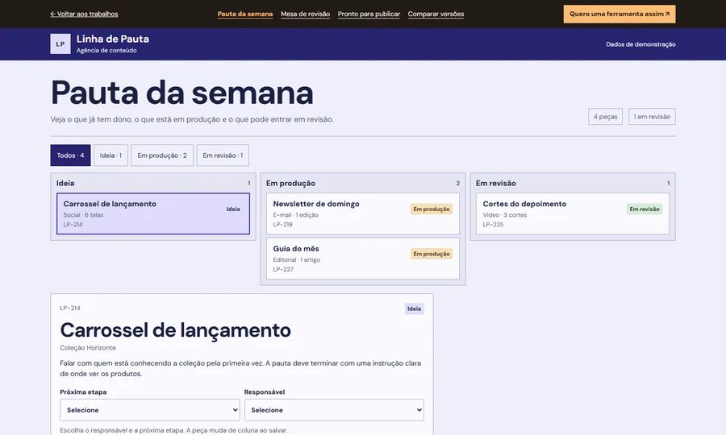
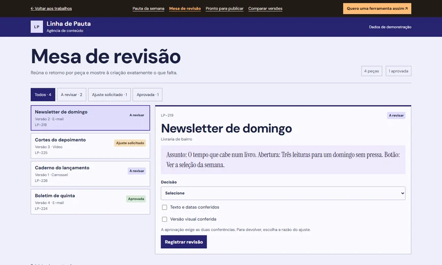
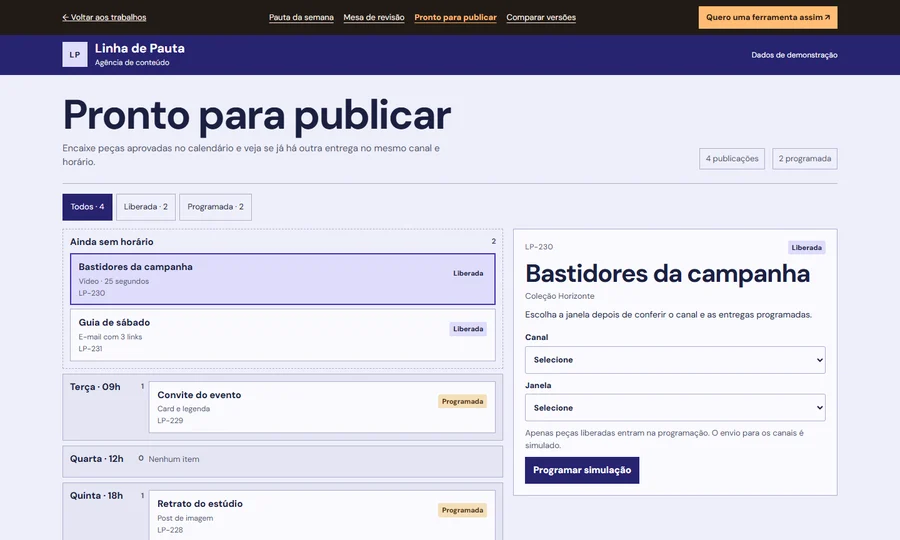

Planeje o que entra na semana, controle revisões e deixe as peças prontas para o calendário.


Veja o que já tem dono, o que está em produção e o que pode entrar em revisão.

Reúna o retorno por peça e mostre à criação exatamente o que falta.

Encaixe peças aprovadas no calendário e veja se já há outra entrega no mesmo canal e horário.